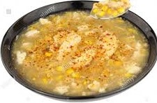
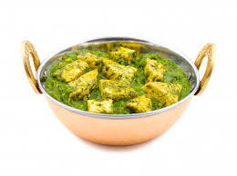
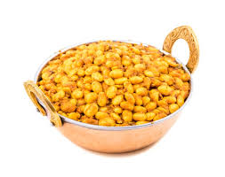

Health is not about
how much
Weight you Lose
It's all about
Life you Gain
Reduces the risk of Anemia. Corn is rich is in Vitamin B12, folic acid and iron which helps in the production of red blood cells in the body,Corn is typically yellow but comes in a variety of other colors, such as red, orange, purple, blue, white, and black. Whole-grain corn is as healthy as any cereal grain, as it’s rich in fiber and many vitamins, minerals, and antioxidants.Popcorn and sweet corn are popular varieties, but refined corn products are also widely consumed, frequently as ingredients in processed food.
Corn soup recipe
a creamy sweet corn soup made from fresh American sweet corn. To make this sweet corn soup with half-half of milk and water. The milk would also contribute to the sweetness in the soup. In the recipe post, I have used water. I never have vegetable stock ready at home. Sometimes I add spring onions to the soup.grated or finely chopped veggies can also be added. Use freshly ground pepper as the aroma from freshly ground or crushed pepper adds a lot of depth to this simple sweet corn soup
Palak corn recipe
In a small grinder or blender, add 2 tablespoons chopped or broken cashews, 1 or 2 chopped green chilies, 1 medium sized onion which is roughly chopped, 1 medium sized tomato which is roughly chopped, 1 inch ginger which is roughly chopped, 3 to 4 small to medium garlic cloves (chopped) and ½ tablespoon magaz (melon seeds). Grind or blend to a smooth paste. Add very little water if required while grinding. Keep this masala paste aside.add the spinach leaves to this hot water. Keep the spinach puree aside.cook sweet corn.add all the ingrediants needed for roasting so that it will give good aroma. asdd palak and corn and little bit of water.boil for 15 min and serve hot with chapati
Masala corn recipe
masala corn is a favorite with kids and most of us. You can always add your choice of spices or add less or more and make a lot of variations in the recipe. Steam or pressure cook 1 medium to large corn cob. You can steam 1 medium to large sweet corn cob in a steamer or a pressure cooker. If pressure cooking, then pressure cook for 2 to 3 whistles in 1.5 cups water. You can also use 1 cup of tinned corn kernels. Mix the melted butter very well with the corn kernels. Alternatively, you can melt the butter and add to the corn kernels. Now add all the seasonings – ½ teaspoon chilli powder, ½ teaspoon chaat masala, ¼ teaspoon dried oregano, 2 to 3 teaspoons of chopped coriander leaves. You can also add your choice of dried herbs